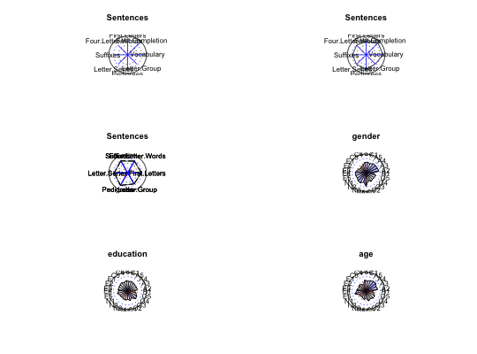

Radar plots and spider plots are just two of the many ways to show multivariate data. radar plots correlations as vectors ranging in length from 0 (corresponding to r=-1) to 1 (corresponding to an r=1). The vectors are arranged radially around a circle. Spider plots connect the end points of each vector. The plots are most appropriate if the variables are organized in some meaningful manner.
spider(y,x,data,labels=NULL,rescale=FALSE,center=FALSE,connect=TRUE,overlay=FALSE, scale=1,ncolors=31,fill=FALSE,main=NULL,...) radar(x,labels=NULL,center=FALSE,connect=FALSE,scale=1,ncolors=31,fill=FALSE, add=FALSE,linetyp="solid", main="Radar Plot",...)
| y | The y variables to plot. Each y is plotted against all the x variables |
|---|---|
| x | The x variables defining each line. Each y is plotted against all the x variables |
| data | A correlation matrix from which the x and y variables are selected |
| labels | Labels (assumed to be colnames of the data matrix) for each x variable |
| rescale | If TRUE, then rescale the data to have mean 0 and sd = 1. This is used if plotting raw data rather than correlations. |
| center | if TRUE, then lines originate at the center of the plot, otherwise they start at the mid point. |
| connect | if TRUE, a spider plot is drawn, if FALSE, just a radar plot |
| scale | can be used to magnify the plot, to make small values appear larger. |
| ncolors | if ncolors > 2, then positive correlations are plotted with shades of blue and negative correlations shades of red. This is particularly useful if fill is TRUE. ncolors should be an odd number, so that neutral values are coded as white. |
| fill | if TRUE, fill the polygons with colors scaled to size of correlation |
| overlay | If TRUE, plot multiple spiders on one plot, otherwise plot them as separate plots |
| add | If TRUE, add a new spider diagram to the previous one. |
| linetyp | see lty in the par options |
| main | A label or set of labels for the plots |
| … | Additional parameters can be passed to the underlying graphics call |
Displaying multivariate profiles may be done by a series of lines (see, e.g., matplot), by colors (see, e.g., cor.plot, or by radar or spider plots.
To show just one variable as a function of several others, use radar. To make multiple plots, use spider. An additional option when comparing just a few y values is to do overlay plots. Alternatively, set the plotting options to do several on one page.
Either a spider or radar plot
op <- par(mfrow=c(3,2)) spider(y=1,x=2:9,data=Thurstone,connect=FALSE) #a radar plot spider(y=1,x=2:9,data=Thurstone) #same plot as a spider plot spider(y=1:3,x=4:9,data=Thurstone,overlay=TRUE) #make a somewhat oversized plot spider(y=26:28,x=1:25,data=cor(bfi,use="pairwise"),fill=TRUE,scale=2)par(op)